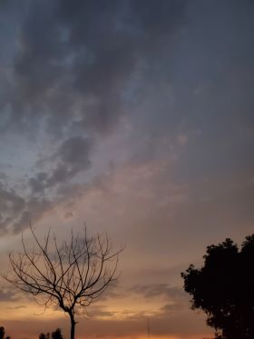

Life without music is imperfectly complete, starting from the string's of the keyboard to the lyrics of the music or songs without it there's a sense that something vital is missing
From the moment I see the sun setting, I know it's time to capture another beautiful moment.While capturing, there's always joy in my heart
For me, baking is exercise of the hands, from mixing the dough to the kneading process, while it heats up in an atmosphere of warmth to cook